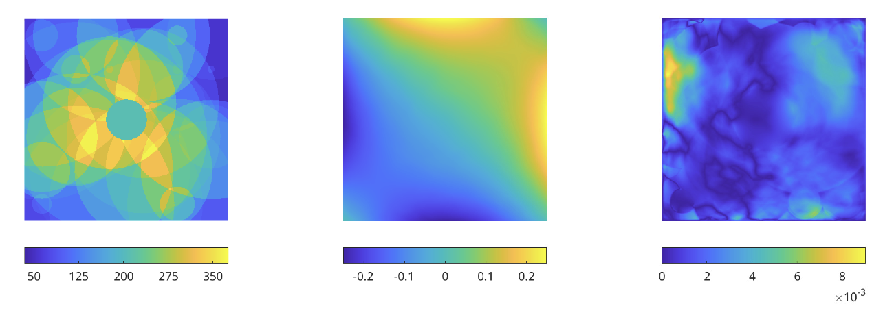
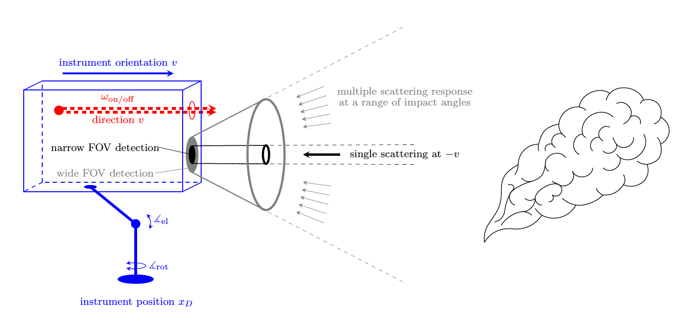
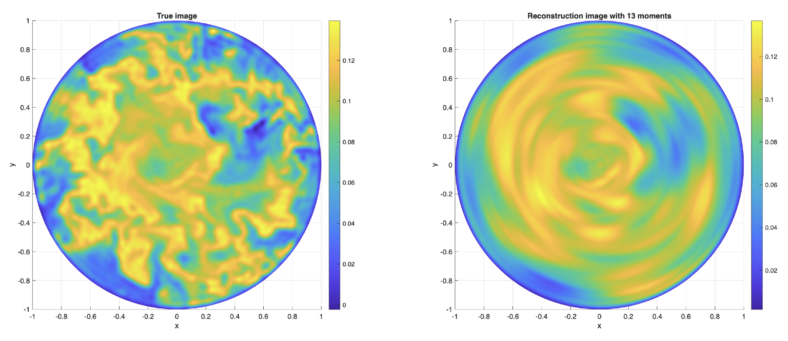
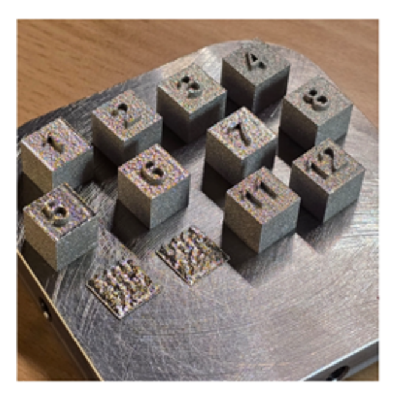

Randomised linear algebra for scientific computing
Our group specializes in integrating Randomised Numerical Linear Algebra (RNLA) with the Finite Element Method (FEM) to solve large-scale parametric elliptic PDEs in real time. In our foundational work, Lung et al. (2019), we proposed a sketched FEM framework that projects solutions onto a low-dimensional subspace and applies randomised statistical leverage-score sampling. This projection not only delivers multi-order speedups but naturally regularises the reduced system against sketching errors.

Left: Spatial profile of an isotropic parameter field on a model with 23 million triangular elements. Middle: The respective deterministic projected FEM solution. Right: The absolute pointwise error of its sketched solution.
To expand these scaling capabilities, Wu and Polydorides (2020) introduced a Multilevel Monte Carlo (MLMC) estimator for matrix multiplication by treating sampling index sizes analogously to grid refinements to drastically decrease the variance of high-dimensional products. Most recently, in Polydorides et al. (2026), we designed a low-variance approach tailored for digital twins and multi-query systems. By pairing parameter-oblivious leverage-score sampling with a control variates scheme and fusing forward and inverse sketches into a regularised estimator, this architecture significantly dampens statistical error bounds while preserving the structural stability of the underlying FEM formulation.
Atmospheric dispersion imaging with off-beam optical backscatter
We are developing a method for fast detection and tomographic imaging of chemicals dispersed in the atmosphere, enabling near real-time 3D tracking of gas plumes that remains impossible under weak-signal constraints in current setups. As outlined in the SIAM work by Lung and Polydorides (2024), our approach utilises wider fields-of-view in the detector to explicitly leverage high-order multiple scattering responses from standard pulsed laser sources. To manage the added complexity of unknown photon trajectories and radiative transfer modeling, we exploit properties of turbulent dynamics within atmospheric plumes which naturally regularise and reduce the dimensionality of the inverse problem. By collecting light from oblique directions that penetrates deeper into the plume where interactions are strongest, we achieve a highly efficient acquisition process, especially when dealing with hard-to-detect chemical species.

Lidar Scanning Configuration: Schematic of the Differential Absorption Lidar (DIAL) instrument mapping a gas plume. The architecture utilizes a narrow field-of-view (FOV) channel to catch direct single-backscattering events alongside a wide FOV detector designed to capture high-order multiple scattering responses over varied impact angles. Image credit: R. Lung
Chemical species tomography for combustion diagnostics
Building upon our previous contributions to chemical species tomography for aviation gas turbine and jet exhausts, we develop computational frameworks to reconstruct gas profiles under severely limited data constraints. Our earlier work established highly efficient approaches for mapping chemical species in high-temperature, high-velocity flows, including the industrial multi-channel tomography setups validated in Polydorides et al. (2018) and the sparse-data inversion techniques presented in Polydorides et al. (2016). Extending these principles, our frameworks have been successfully validated with real experimental data, as demonstrated in Upadhyay et al. (2022), leveraging underlying structural regularities to capture cross-sectional concentration profiles. Most recently, by fusing Large Eddy Simulation (LES) ground truths with a continuous Polar Fourier Transform (PFT) formulation and the Fourier Slice Theorem, we have developed a truncated series framework capable of reconstructing entire profiles from as few as four projection angles. This allows for the precise, real-time mapping of complex turbulent structures within combustor environments via low-dimensional angular coefficients, entirely bypassing dense, pixel-by-pixel grid inversions.

Left: The true, highly complex cross-sectional species concentration profile within a turbulent flow domain. Right: The smooth, computationally efficient tomographic profile reconstructed using only 13 moments, leveraging underlying structural regularities to bypass dense, pixel-by-pixel grid inversions.
Online surrogate models for nonlinear heat transfer in additive manufacturing
This project aims at expediting numerical simulation based on the finite element method so that it becomes practical to use online in the context of additive manufacturing (3D printing). We focus on the computationally demanding non-linear heat transfer equation to simulate the phase transitions (powder, liquid, solid) during a powder bed fusion process. Exploiting the smooth properties of the heat kernel, we have been exploring ideas from Gaussian process emulators, model order reduction and randomised sketching in order to develop surrogates that are low-dimensional and can be used as tools for online analysis, including measuring the dimensions of the melt pool, and the anisotropy of the heat conductivity.

Experimental Validation: Physical metallic test specimens printed via Laser Powder Bed Fusion (LPBF) used to empirically validate our fast surrogate models. The online emulators monitor transient melt pool footprints, layer-by-layer material transitions, and thermal conductivity properties directly during the fabrication process.